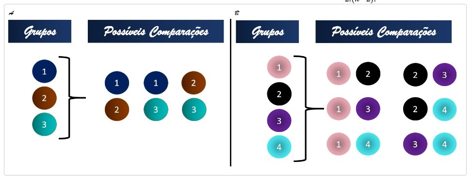
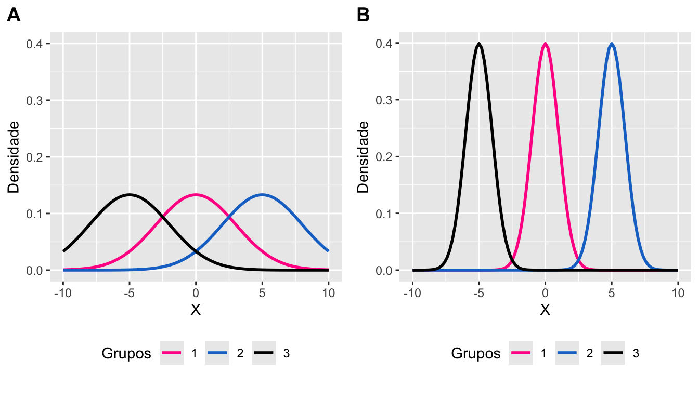
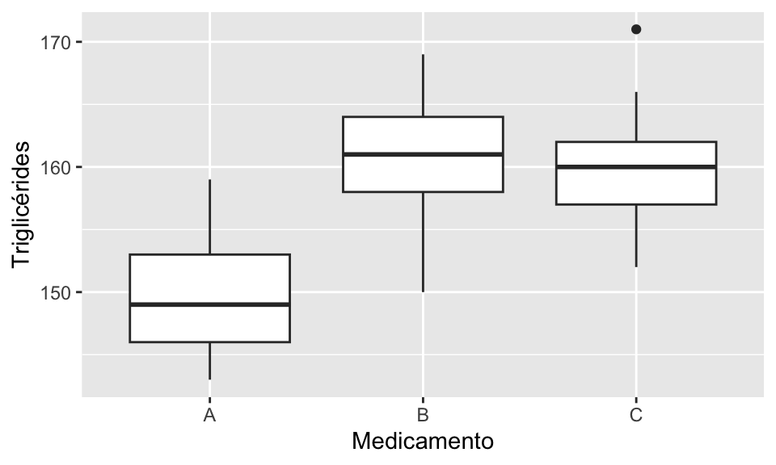
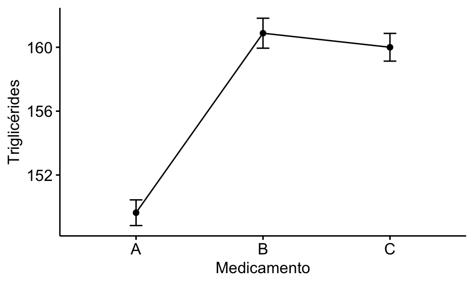

Bioestatística Usando o R
10 ANOVA
Se estivéssemos interessados em comparar três grupos independentes, uma solução seria compará-los dois a dois e, nesse caso, seriam necessárias três comparações (Figura 1(A)). Se estivéssemos comparando quatro grupos independentes, precisaríamos realizar seis comparações duas a duas, ou seja, executar seis testes (Figura 1(B)). Portanto, se nossa amostra tivesse \(k\) grupos, seriam necessárias \(\frac{k!}{2!(k-2)!}\) comparações.
Logo, parece mais interessante, sabermos primeiro se existe pelo menos um grupo diferente dos demais ou se todos são equivalentes. Se a amostra observada tem \(k\) grupos independentes, isso equivale a testar as hipóteses:
\[ H_0: \mu_1 = \mu_2 = ... = \mu_k \\ H_1: \mu_i \ne \mu_j \ para \ algum \ par \ (i,j). \]
Lembrando que \(\mu_k\) é a média populacional do \(k\)-th grupo.
Se, ao realizarmos o teste, a hipótese nula não for rejeitada, concluímos que os grupos são equivalentes e paramos a análise aqui. Agora, se a hipótese nula for rejeitada, saberemos que há pelo menos uma média que difere das demais. Então, agora faz sentido investigarmos onde está a diferença encontrada, realizando testes de comparações dois a dois.
Notem que um teste que compare primeiro todas as médias dos grupos ao mesmo tempo é mais interessante, pois facilita a análise. E, isso, é exatamente o que a “Análise de Variância” faz.
ANOVA, ou Análise de Variância, é um procedimento estatístico utilizado para comparar a média de três ou mais grupos em amostras independentes. Esse nome decorre do fato desse método comparar a variabilidade entre os grupos, com a variabilidade dentro dos grupos. Se a variabilidade entre os grupos for pequena comparada à variabilidade dentro de cada grupo (Figura 2(A)), fica difícil distinguir entre os grupos. Por outro lado, se a variabilidade entre os grupos for grande, comparada à variabilidade dentro de cada grupo (Figura 2(B)), fica mais evidente a diferença entre os grupos.
A variabilidade entre os grupos mede os desvios entre os grupos. Ela é calculada usando os desvios das médias dos grupos \(\bar{x_1}, \bar{x_2}, ..., \bar{x_k}\) (\(k\) igual ao número de grupos) em torno da média geral \(\bar{x}\).
A variância dentro dos grupos representa a variação global contida na amostra. A média aritmética das variâncias de cada grupo é o estimador da variância global.
A variabilidade entre os grupos mede os desvios entre os grupos. Ela é calculada usando os desvios das médias dos grupos \(\bar{x_1}, \bar{x_2}, ..., \bar{x_k}\) (\(k\) igual ao número de grupos) em torno da média geral \(\bar{x}\).
A variância dentro dos grupos representa a variação global contida na amostra. A média aritmética das variâncias de cada grupo é o estimador da variância global.

A análise de variância requer a contrução de um modelo estatístico, como o abaixo:
\[ y_{ij} = μ_i + e_{ij} \]
\(\mu_i\): média do grupo \(i\).
\(e_{ij}\): efeito aleatório, não controlado, do \(j\)-ésimo indivíduo do grupo \(i\) (erros).
\(y_{ij}\): variável resposta do \(j\)-ésimo indivíduo do grupo \(i\).
Contudo, para garantir que esse modelo descreva adequadamente as observações, algumas condições precisam estar satisfeitas. Os erros devem ser independentes e normalmente distribuídos, com média zero e variância constante:
- \(e_{ij} \sim N(0,\sigma^2)\), para todo \(i\) e \(j\).
- \(E(e_{ij},e_{ik})=0\), para \(j \ne k\), indicando independência entre as observações dentro de cada subpopulação.
- \(E(e_{ij},e_{ (i+1) k})=0\), para todo \(j\) e \(k\), indicando independência entre as observações das subpopulações.
É importante que essas três condições sejam satisfeitas para que o modelo seja válido. A normalidade dos resíduos pode ser verificada através do teste de Shappiro-Wilk. Já a homogeneidade das variâncias, chamada de homocedasticidade, pode ser confimada pelo teste de Bartlett. Por fim, analisa-se a independência entre os resíduos aplicando-se o teste de Durbin Watson nos resíduos padronizados.
10.1 ANOVA
EXEMPLO:
Um hospital conduziu um ensaio clínico com o objetivo de comparar a eficácia de três medicamentos no tratamento da hipertrigliceridemia (TG > 150 mg/dL) em homens com 50 anos ou mais. Os voluntários foram divididos em três grupos de 25 pacientes, e cada grupo recebeu um dos medicamentos: A, B ou C. Após quatro meses de tratamento, foi avaliado o nível sérico de triglicérides de cada paciente. Deseja-se saber se o desempenho dos medicamentos foi equivalente. Considere nível de signficância de 5%.
SOLUÇÃO:
Para realizar essa análise, o R precisa enxergar o medicamento como uma variável categórica. Assim, precisamos organizar os dados da seguinte forma:
Code
tg <- c(146, 147, 154, 146, 144, 143, 148, 153, 149, 150, 148, 151, 152, 153, 155, 145, 148, 159, 155,
148, 154, 146, 152, 146, 149, 164, 164, 163, 158, 159, 166, 169, 157, 156, 155, 166, 164, 159,
162, 162, 161, 160, 166, 165, 155, 150, 161, 166, 153, 161, 164, 156, 161, 157, 159, 171, 160,
157, 157, 165, 161, 159, 162, 152, 161, 159, 161, 162, 159, 164, 155, 155, 153, 164, 166)
medicamento <- rep(c("A", "B", "C"), each=25)
medicamento <- factor(medicamento)
dados <- data.frame(medicamento, tg) #construindo um data frame
head(dados) #observando o início do banco de dados| medicamento | tg |
|---|---|
| A | 146 |
| A | 147 |
| A | 154 |
| A | 146 |
| A | 144 |
| A | 143 |
Antes de iniciarmos qualquer análise estatística, devemos primeiramente, realizar uma análise descritiva dos dados.


| Grupo/Medicamento | Média | Desvio padrão |
|---|---|---|
| A | 149.64 | 4.020 |
| B | 160.88 | 4.693 |
| C | 160.00 | 4.340 |
Observando a Figura 3 e a Tabela 2, notamos que aparentemente existe diferença entre os grupos. Entretanto, devemos construir um modelo estatístico e calcularmos os resíduos:
Code
| res | res_padr |
|---|---|
| -3.64 | -0.85217 |
| -2.64 | -0.61806 |
| 4.36 | 1.02073 |
| -3.64 | -0.85217 |
| -5.64 | -1.32039 |
| -6.64 | -1.55451 |
Passa-se agora à verificação dos pressupostos da ANOVA.
1) Normalidade dos resíduos:
Code
shapiro.test(res_padr) #teste de Shapiro-WilK
#>
#> Shapiro-Wilk normality test
#>
#> data: res_padr
#> W = 0.99238, p-value = 0.9371 Considerando \(\alpha=5%\), não rejeitamos a hipótese nula de normalidade dos resíduos.
2) Homocedasticidade ou homogeneidade das variâncias:
Code
bartlett.test(res_padr ~ medicamento) # Teste de Bartelett
#>
#> Bartlett test of homogeneity of variances
#>
#> data: res_padr by medicamento
#> Bartlett's K-squared = 0.56503, df = 2, p-value = 0.7539 Considerando \(\alpha=5%\), não rejeitamos a hipótese nula de homogeneidade de variâncias entre os grupos.
3) Independência dos resíduos:
Code
car::durbinWatsonTest(modelo) #Teste de Durbin Watson
#> lag Autocorrelation D-W Statistic p-value
#> 1 0.04909325 1.865823 0.37
#> Alternative hypothesis: rho != 0 Como o valor da estatística D-W encontrado é próximo de 2 e \(p-valor \ge 5\%\), consideramos que os resíduos são independentes.
Verificados os pressupostos, podemos considerar o modelo ajustado na Análise de Variância:
Como o p-valor encontrado é menor que o nível de significância considerado (5%), a hipótese nula é rejeitada. Ou seja, ao menos uma das médias pode ser considerada diferente das demais. Nesse caso, devemos prosseguir com o teste de Tukey, por exemplo, para identificar quais grupos possum médias diferentes.
Code
#Comparações duas a duas via teste Tukey
tukey <-TukeyHSD(anova, ordered=TRUE)
tukey
#> Tukey multiple comparisons of means
#> 95% family-wise confidence level
#> factor levels have been ordered
#>
#> Fit: aov(formula = modelo)
#>
#> $medicamento
#> diff lwr upr p adj
#> C-A 10.36 7.409127 13.310873 0.0000000
#> B-A 11.24 8.289127 14.190873 0.0000000
#> B-C 0.88 -2.070873 3.830873 0.7562282 A função
TukeyHSD() retorna uma tabela onde as linhas são referentes à comparação em pares de grupos:- diff: diferença entre as médias dos dois grupos.
- lwr: limite inferior do intervalo de confiança da diferença entre as médias.
- upr: limite superior do intervalo de confiança da diferença entre as médias.
- p adj: O p-valor do teste. Um p-valor valor menor que o nível de significância adotado indica que há uma diferença estatisticamente significante entre as médias dos dois grupos comparados. Outra forma de se avaliar é observar se o zero está fora do intervalo de confiança.
No nosso exemplo, houve diferença significativa entre as médias dos grupos A e C (p-valor<0,001) e entre as médias os grupos A e B (p-valor<0,001); mas não entre as dos grupos B e C (p-valor=0,756). Concluimos, então, que as médias B e C são iguais e que ambas são diferentes da média de A, ao nível de significância de 5%.
Caso as suposições da ANOVA não fossem satisfeitas, poderíamos utilizar transformações, correções ou o teste não paramétrico de Kruskal-Wallis. A função kruskal.test realiza o teste KW no R. Maiores detalhes em: http://lea.estatistica.ccet.ufrn.br/tutoriais/kruskal_wallis.html
10.2 Kruskal-Wallis
O teste de Kruskal-Wallis é um teste não paramétrico utilizado para comparar três ou mais grupos independentes. Ele é uma alternativa ao teste ANOVA quando as suposições de normalidade e homocedasticidade não são atendidas.
Suponha que as suposições da ANOVA não foram satisfeitas e portanto, iremos realizar o teste de Kruskal-Wallis.
Code
kruskal.test(tg~medicamento, data = dados)
#>
#> Kruskal-Wallis rank sum test
#>
#> data: tg by medicamento
#> Kruskal-Wallis chi-squared = 42.532, df = 2, p-value = 5.812e-10 Como p-valor inferior ao nível de significância de 5%, rejeitamos a hipótese nula de que o nível sérico de triglicérides têm a mesma distrição entre os grupos. Ou seja, ao menos um dos grupos difere dos demais.
O teste de Kruskal-Wallis não nos diz quais grupos são diferentes, apenas que há pelo menos um grupo diferente dos demais. Para identificar quais grupos diferem entre si, podemos realizar o teste de Mann-Whitney com correção de Bonferroni, que é utilizada para controlar o erro tipo I em múltiplas comparações.
Code
pairwise.wilcox.test(dados$tg,
dados$medicamento,
p.adjust.method="bonferroni")
#>
#> Pairwise comparisons using Wilcoxon rank sum test with continuity correction
#>
#> data: dados$tg and dados$medicamento
#>
#> A B
#> B 7.0e-08 -
#> C 6.5e-08 1
#>
#> P value adjustment method: bonferroni Conluímos, então, que os grupos A e C são diferentes (p-valor<0,001) e que os grupos A e B também são diferentes (p-valor<0,001). Já os grupos B e C não diferem entre si (p-valor=1).
Referências:
Bussab W De O, Morettin PA. Estatística Básica. São Paulo: Saraiva, 2006.
Massad, E; Menezes, RX; Silveira, PSP; Ortega, NRS. Métodos Quantitativos em Medicina, Manole, 2004.